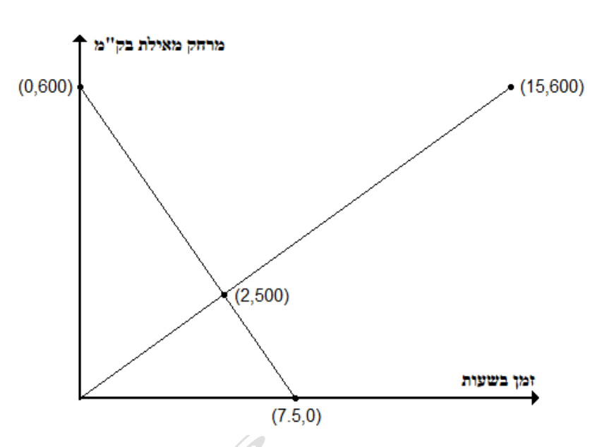

אלגברה לכיתה ח'
12
התיאור גרפי של תופעות לינאריותאלגברה · כיתה ח' · קריאת מידע מגרף לינארי ומפגש גרפים
משאית יצאה בשעה 6:00 מאילת לקריית שמונה (המרחק כ־600 ק"מ). באותה שעה יצאה משאית אחרת מקריית שמונה לאילת. הגרפים מתארים את המרחק מאילת של שתי המשאיות:

- א.בגרף מסומנות 4 נקודות. הסבירו מה מתארת כל נקודה.
- ב.באיזו שעה ובאיזה מרחק מאילת נפגשו המשאיות?בשעה:במרחק:ק"מ